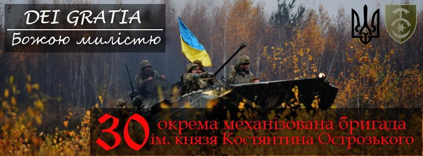

Історична довідка та бойовий шлях

30 окрема механізована бригада ім князя Костянтина Острозького - військова частина у складі
Сухопутних військ Збройних Сил України.
Пункт постійної дислокації бригади знаходиться в місті Новоград-Волинський, Житомирської
області.
6 грудня 1991 року 30 гвардійська Рівненська танкова дивізія увійшла до складу Збройних
Сил України.
В лютому 1992 року особовий склад дивізії склав присягу на вірність народу України.
20 жовтня 1999 р. Указом Президента України № 1356/99 дивізії було присвоєно почесне
найменування
«Новоград-Волинська». Цього ж дня Президент України вручив дивізії Бойовий Прапор.
До 30 липня 2004 року танкова бригада, згідно Директиви Міністра оборони України, була
переформована
в 30 окрему гвардійську механізовану бригаду. З осені 2004 року бригада була однією з перших
частин
швидкого реагування, на базі якої проводився експеримент по комплектуванню
військовослужбовцями військової
служби за контрактом, і вже станом на кінець 2005 року у військовій частині не залишилось
жодного
військовослужбовця строкової служби.
За зразкове виконання поставлених завдань та високі показники в бойовій підготовці
Указом Президента
України №232/2018 24 серпня 2018 року 30 окремій механізованій бригаді присвоєно почесне
найменування
"імені князя Костянтина Острозького".
З самого початку збройного протистояння російській агресії підрозділи 30 окремої
механізованої бригади
постійно ведуть боротьбу за свою землю. За сигналом «Бойова тривога» підрозділи 1
батальйонно-тактичної групи
(далі «бтгр») 8 березня 2014 року залишили пункт постійної дислокації та здійснили
переміщення в напрямку
тимчасово-окупованого Криму, де виконували завдання до липня 2014 року.
Після дострокового повернення військовослужбовців 2 механізованого батальйону з
миротворчої місії в
Косово було сформовано 2-у бтгр, бійці якої 22 травня 2014 року прийняли свій перший бій за
місто Рубіжне,
Луганської області.
1 бтгр 30 омбр влітку 2014-го року приймала участь в спецоперації по тилам противника,
яка носила назву
«Рейд».
Серед найбільш важливих бойових зіткнень 2014 року - це бої за Савур-Могилу, с.
Степанівка, Міусинськ,
Рубіжне, Металіст, Лутугино, забезпечення виходу з ворожого оточення підрозділів 24-ї омбр,
72-ї омбр, 79-ї
оаембр підрозділів прикордонників та нацгвардії. Під час бойових дій влітку 2014 року бійці
зведеної роти
2-ої бтгр під час важкого бою поблизу населеного пункту Георгіївка вибили підрозділ
псковської десантної
дивізії. Так вдалося повернути під контроль стратегічно-важливу висоту. Це дало змогу
українським підрозділам
контролювати дорогу, що вела до Луганського аеропорту, за який також велися постійні бої. В
ході штурму висоти
наші хлопці знищили та захопили російські бойові машини, які, до речі, разом з документами
військовослужбовців
РФ зараз знаходиться в Києві у виставковому залі, як доказ присутності російських військ на
території України.
В січні-лютому 2015 підрозділи 30 бригади активно приймали участь в боях на
Дебальцівському напрямку за
такі населені пункти: Вуглегірськ, Логвинове, Нікішине, Рідкодуб, Чорнухине, Санжарівку,
Троїцьке, та
безпосередньо - Дебальцеве. Під час бою за Логвинове бійці бригади в меншості взяли в полон
17 бойовиків
незаконних збройних формувань.
З лютого 2015 по лютий 2016 підрозділи нашої бригади зайняли оборону на так званій
«Світлодарській дузі»:
Троїцьке-Миронівський-Луганське-Світлодарськ-Кодема.
З 19 червня 2016 року по кінець червня 2017 року особовий склад бригади з честю
виконував поставлені
завдання на напрямку Гранітне-Старогнатівка-Новотроїцьке, що поблизу окупованого
Докучаєвська.
З жовтня 2017 року по червень 2018 року, підрозділи бригади виконували бойові задачі по
стримуванню
російської агресії за напрямком:
Красногорівка-Мар’їнка-Славне-Тарамчук-Березівка-Новотроїцьке.
З січня 2019 року по теперішній час підрозділи 30 окремої механізованої бригади ім князя
Костянтина
Острозького спільно з ОЗСП НГУ «АЗОВ» в складі Об’єднаних сил виконують бойові завдання по
стримуванню та
відсічі збройної агресії Російської Федерації на «Світлодарській дузі»:
Троїцьке-Миронівський-Луганське-
Світлодарськ-Новолуганське-Травневе-Гладосове-Зайцеве.
Сотні військовослужбовців бригади удостоєні державних та відомчих нагород, серед яких
ордени «Богдана
Хмельницького» та «За мужність». За особисту мужність, самовідданість і високий
професіоналізм, проявлені
при захисті державного суверенітету та територіальної цілісності України присвоєно почесне
звання Героя
України з врученням ордена «Золота Зірка» трьом офіцерам бригади: Володимир Володимирович
Гринюк, Сергій
Станіславович Собко, який зараз керує 128 окремою гірсько-штурмовою бригадою та Іван
Іванович Віннік.
14 бійців удостоєні звання Народного Героя України, четверо з яких - посмертно.
Командир 30 омбр ім. князя Костянтина Острозького – полковник Гараз Іван Вікторович.
Нагороджений
орденом Богдана Хмельницького III ступеня та відзнакою МОУ «Доблесть і честь».